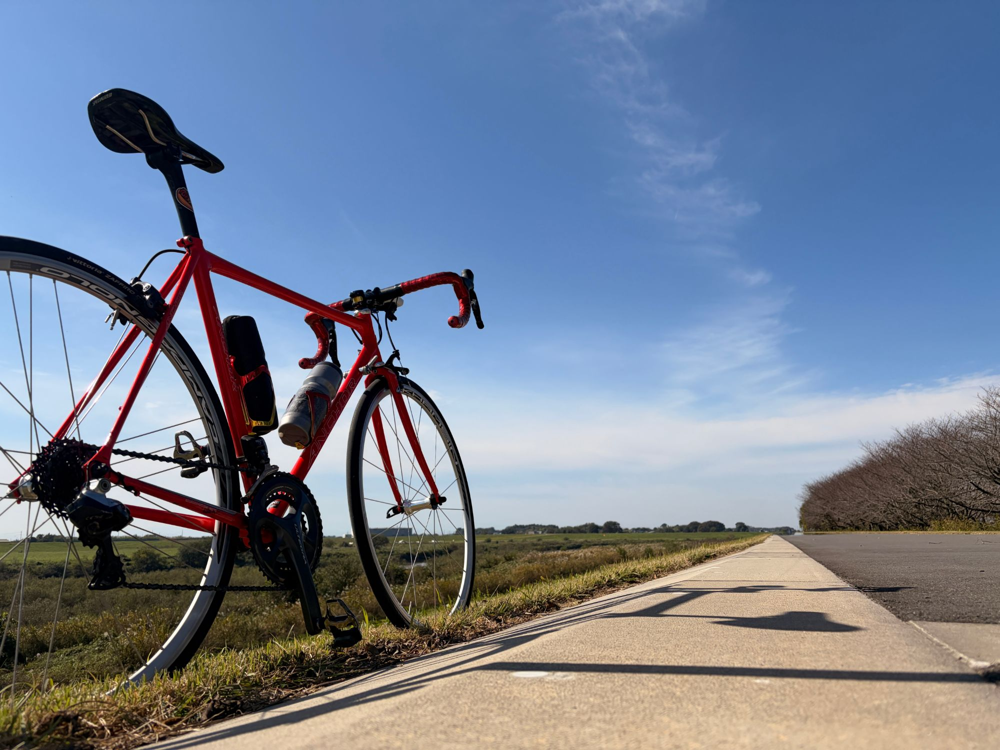
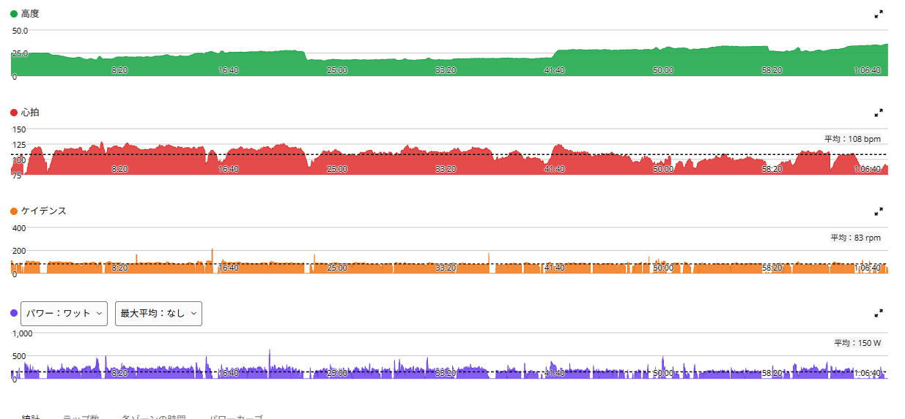
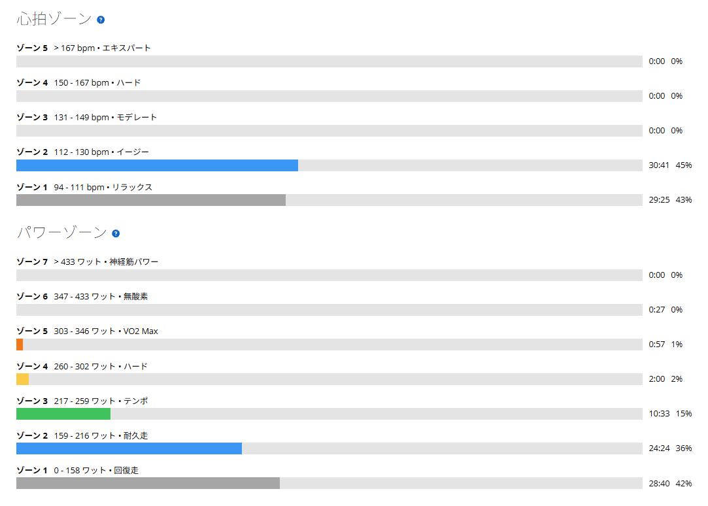

高強度を3日続けた後、青空の下でアクティブレスト。脚が軽かった日
今日は外へ。ここ3日を振り返ると、唐沢ゴルビー、その翌日にSST20分×3本、昨日は8分×4本に初挑戦して、8分1本と約1分半で撃沈。かなり濃い3日間である。だから今日は、追い込むのではなく脚を動かす日。アクティブレストにした。そして今日は、天気が最高だった。

踏まない日に、こんな天気が来る
めっちゃいい天気である。青空の下、まっすぐ続く道の脇に自転車を置いて写真を一枚。赤いANCHORと広い空。こういう日は、トレーニングの数字を忘れてそのままずっと走っていたくなる。
強度を落とした日に限ってこの天気なのは少し悔しい。でも、のんびり景色を見られるのは、こういう日の特権かもしれない。
約30km・NP178W・TSS42
- 全体30.53km / 1時間07分14秒（経過1時間18分11秒）/ 獲得標高63m
- 負荷平均150W / NP178W / IF0.615 / TSS42.0 / FTP設定289W
- 心拍・回転平均108bpm / 最大129bpm / 平均83rpm

当初は1時間半前後を考えていたが、実際に走った時間は約67分。短くなったものの、今日の目的は高い数字を出すことではない。
ちゃんと抑えられたのか

心拍は94〜111bpmと112〜130bpmがそれぞれ約30分で、131bpm以上のゾーンは記録上ゼロ。心肺に強い負担をかける走りではなかったと思う。
ただ、完全に一定の低出力だったわけではない。パワーゾーンには短い高出力区間もあり、TSS42は昨日の38.7より高い。だから「何も負荷がない回復走」とまでは言わない。それでも、高強度をやらずに帰ってくるという方針は、おおむね守れた。
走り終わったら、脚が軽い
今日の一番の収穫は、走り終わった後の感覚である。脚が軽い。ここ数日はSSTをかなり頑張り、8分走では撃沈。疲労を抱えているはずなのに、無理なく外を走れて、終わってみると脚の重さが気にならなかった。もちろん、これで疲労が完全に抜けたと証明できるわけではない。それでも、少なくとも今日の感覚としては悪くない。
そもそも、自転車に乗るのが好きだった
最近は「もっと強く踏む」「長く踏む」ばかり考えていた。でも今日は、出力を上げずに外へ出て、天気の良さを楽しめた。こういう日まで予定の時間を必死で埋めなくてもいいのかもしれない。
毎日数字とにらめっこしていると忘れるが、そもそも自転車に乗るのが好きなのである。高強度で頑張る日も必要。こうして気持ち良く帰ってくる日も、やっぱり必要。